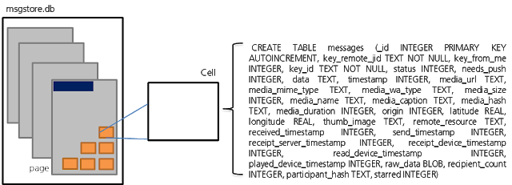
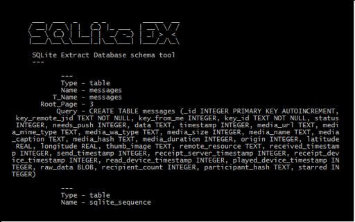
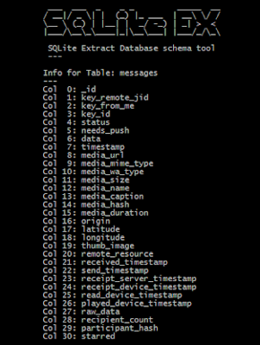

{kind=link}
Hace poco me he tenido que enfrentar al análisis forense de la
aplicación Whatsapp en Android, y la sorpresa es la limitada información
que existe al respecto. Whatsapp no tiene una API pública, y no sólo
eso, sino que persigue claramente a quién tras aplicar ingeniería
inversa publica información al respecto, me estoy refiriendo sobretodo a
la información del protocolo interno de la aplicación.
Antecedentes
Independientemente de la información existente, mi reto no era descifrar
la base de datos y recuperar los mensajes (sobre esto si se encuentra
disponible un amplio abanico de artículos en Internet), sino recuperar
mensajes eliminados de la base de datos, tanto si la aplicación ha sido
eliminada (desinstalada) como si simplemente se ha eliminado el
historial de chat desde el interfaz de la aplicación.
Por tanto, el trabajo es analizar la estructura interna de una base de
datos SQLite, con el objetivo de recuperar la información que ha sido
eliminada y que una sentencia SQL no es capaz de mostrar.
En este punto es donde empieza mi artículo, analizar el formato de
SQLite para recuperar información eliminada.
Estructura de SQLite
Lo principal para analizar una base de datos SQLite internamente es
conocer su formato interno, para ello lo mejor es consultar la
documentación oficial ([SQLite Database File
Format](http://www.sqlite.org/fileformat.html#varint_format)) donde se
explica como se organiza la información dentro del fichero con extensión
.db (SQLite).
Una base de datos SQLite se organiza internamente en páginas, y dentro
de cada página se almacenan los registros (filas), que se llaman celdas,
correspondientes a la información de las tablas de la base de datos.
Cada página tiene asignada una función dentro de la estructura del
esquema de la base de datos (sql_master), es decir, una tabla de la
base de datos almacena información en las celdas de una página.
De forma resumida, se puede representar el funcionamiento interno de una
base de datos SQLite tal y como se puede ver en la siguiente imagen:
|  |
| ST2Labs 1 - SQLite Format Brief |
{kind=link}
Para conocer el esquema de la base de datos, se puede ejecutar una
sentencia SQL tal que así:
SELECT * FROM sqlite_master;o bien, he creado mi propia herramienta que facilita la consulta de
información de una base de datos SQLite, tal que así:
python sqlite_ex.py msgstore.db|  |
| ST2Labs 2 - WhatsApp sql_master (db_schema) |
{kind=link}
Además la herramienta permite hacer un “dump” de la base de datos,
guardar en un archivo el esquema de la base de datos al completo, o
mostrar la información de una tabla en particular, por ejemplo, y
siguiendo con el hilo del articulo, vamos a consultar la información
sobre la tabla “message” que es donde Whatsapp almacena la información
de los mensajes que se intercambian.
python sqlite_ex.py -i messages msgstore.db|  |
| ST2Labs 3 - WhatsApp Messages Table Info |
{kind=link}
Volviendo a la imagen 2, se observa que la tabla “messages” de WhatsApp
se encuentra almacenada en la página 3 de la base de datos SQLite
(msgstore.db) y la imagen 3 nos muestra el “contenido” como será
organizado en la celda que se generan dentro de la base de datos en la
página 3.
Volveremos más tarde a esta información, que nos resultará útil más
adelante cuando empiece a analizar la estructura interna del fichero
msgstore.db para recuperar la información eliminada.
Pero esto lo dejo para mi siguiente artículo.
La herramienta que he utilizado en éste artículo la podéis encontrar en
mi repositorio oficial (https://github.com/ST2Labs/DFIR) o descargar
la versión para windows directamente a continuación:
sha1:
7IR6FALIEDG6EPAIE6LVMTZY2UFQVEOO (sha1
base 32)
sha-256:
<span
style=“font-size: x-small;“>6FE6BB8DB06D1A8E17ACD8B79A372821B23260468A92B54EAE229906D32FFACF
sha-512:
<span
style=“font-size: x-small;“>9D8A9AC6037F5F75367F31E2516D98613E8633C79536B99A76ACAD56865250A7845C8A411F1AB8213353DE7EB67AE3E429AAE063049E9A44B4E5E95444C3500C
Referencias:
[1] [SQLlite File
Format](http://www.sqlite.org/fileformat.html#varint_format)
#ST2Labs #GEOSystemSoftware
#DFIR
#Forensics